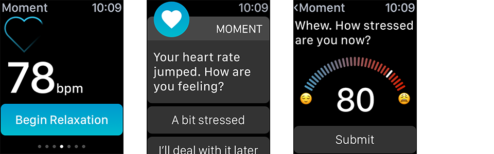
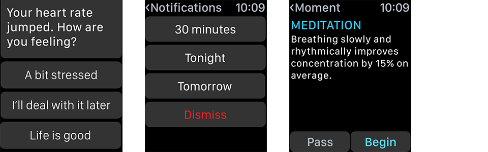
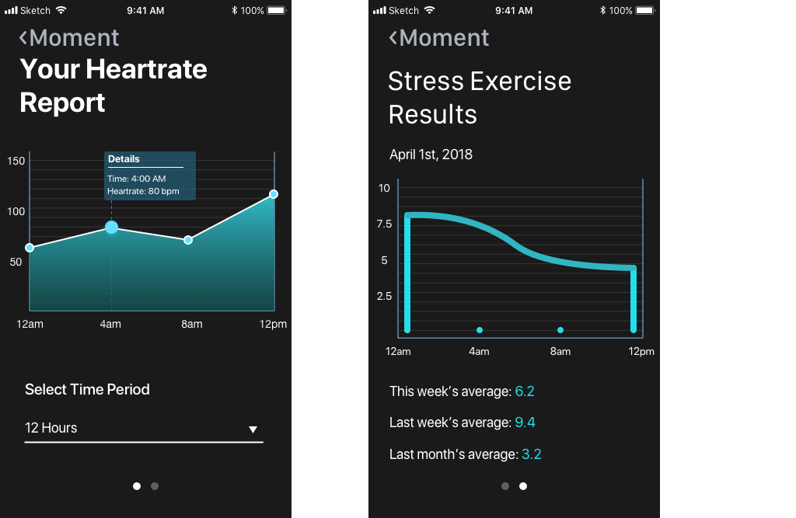
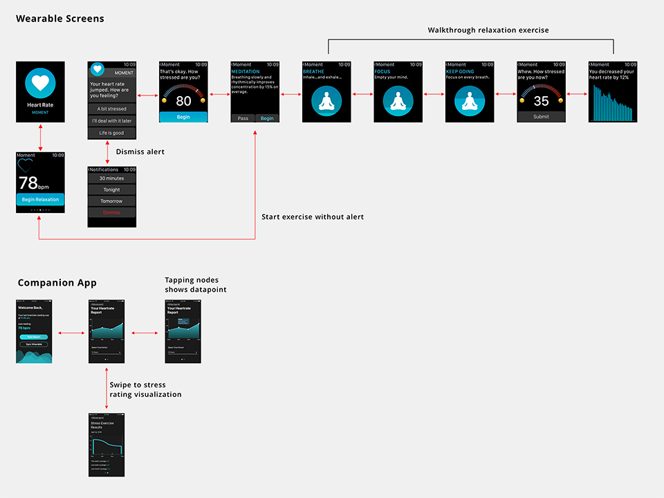

Project Overview
Summary
Moment is a UX research & design project that explores the use of personal informatics for data collection and analysis. For this project, our team of four designers chose a topic that was personal to all of us – academic stress. Special focus was placed on developing an accurate data collection strategy which would promote behavioral change.
We designed an wearable & companion mobile app that measueres the strength of various stress coping mechanisms in order to provide in-the-moment feedback on the user’s fluctuating stress levels. Users wear a wearable containing a heart rate sensor that shows interest in significant changes in the user’s heart rate and suggests stress relief exercises, which the user will rate upon completion. Through repeated trials, the device will learn which exercises are most effective for that user and make better suggestions. Additional feedback is provided through a companion mobile app where they can view visualizations of their heart as a way to learn about their progress managing their stress.
Through our proposed design, we aim to improve the user’s ability to identify which coping mechanisms are most effective for themselves.
Objective
Design a solution that would aid users in understanding what their personal methods for stress management are most effective.
Solution
A wearable + mobile app that uses multiple methods of data collection to aid a user find the best stress coping mechanisms for themselves.
My Role
I was involved during each step in the project. I contributed to brainstorming sessions, conducted user interviews, wireframing, mockups for watch faces and companion app.
Approach

User Research
Interviews
Each member of our team recruited one person to interview about their experiences with school-related stress. We were able to speak with a wide spectrum of academics, from those just starting undergraduate studies to those that were several years into a PhD. We wanted to make sure we understood how a diverse group of students experienced stress and what common coping activities were used.
From these interviews, we learned the following about student experiences with stress:
- Finding the midpoint: Our interviewees found that some stress was important motivating themselves to perform, but feel fatigued and become unable to focus.
- Self-awareness: Interviewees generally understood the source of academically related stress, but symptoms of stress hinders their ability to resolve the problem.
- Unsustainable: Some methods of stress relief are short term tasks that don’t help with the problem at hand. Making lifestyle changes commonly cited as a way to reduce stress symptoms long term.
Persona
Based on our interview findings, we created a persona to describe the type of user that were should be designing for.
Jackie is a masters student in a challenging masters program that has to juggle work and school responsibilities. She is familiar with the typical ways of handling stress, but wants to better understand what strategies actually work for her so that she can better manage her day.
Final Design
Design Objectives
- In-the-moment advice: Provide coping advice the moment heart rate leaps.
- Identify healthy, effective coping methods: Reinforce healthy ways to manage stress.
- Tracking changes and improvement: Allow users to recognize effectiveness of coping strategies through data visualization
Design Solution
In-the-Moment Support
Watch monitors and takes interest in heart rate jumps, prompting use to try a relaxation activity. The app will also provide guidance on completing said activity. We use friendly, casual language in the alert to make the app feel more approachable and human.

Encouraging Behavior Change
Learning and reinforcing positive ways to detail with stress is a priority but change is hard. Our app breaks down activities into smaller actionable steps that are easier to complete, and provide positive reinforcement. This was feature was inspired by the concept of “Shaping the Path” from Dan & Chip Heath’s book Switch: How to Change Things When Change is Hard, in which the authors’ found change is easier when one makes the steps for change smaller and more actionable.

Flexibility and Control
We understand that users may not be able to act on their stress right away and provide the ability for users to dismiss the prompts. We also realize that heart rate can fluctuate non-stress related reasons such as exercise, so we give users the ability to dismiss a false positive. Moreover, we wanted to convey the feeling that user, not the app, was in control the decision to act.

Short and Long term feedback
The app tracks and provides access the data it collects through visualizations which provide feedback on how well stress is being managed through heart rate and stress rating history. Visible feedback is important for change, so we made it point to find a way to show the user progress for a something intangible as stress management.

Ideation
Our ideation phase was spent refining the scope of our project and determining the exact use cases we wanted our product to fulfill. We found from our research that academic stress is best overcame by completing the stressful task (such as completing a difficult project), but stress symptoms (e.g. fatigue, headaches) distracted the individual from doing so. We determined that providing in-the-moment stress management support was the most effective way to keep users on aid stress coping.
Design Process
Sketching
Data visualization was an important concept during our wireframing sessions. We wanted to emphasis feedback as a means to motivate adaptation of better stress coping mechanisms.
Measurement Strategy
Our team placed a special focus on finding a good strategy for measurement for stress, which can notoriously hard to measure.
We chose a strategy that strikes a balance between burdening users with too many questions and blindly trusting measurements from sensors. We use a heart rate sensor to gather information quietly, but also ask the user how they feeling when the sensor detects a jump to check if the change was due to stress. The app collects self-reported information by asking the user to rate their stress level before and after performing a coping exercise in order to track whether the user perceives the method as working.
Information Architecture
An overview of the user flow for the wearable and the companion app. Emphasis was placed on creating a straightforward workflow wouldn’t require extra cognitive effort to navigate. We wanted to avoid any potential friction with using the app when the user was already stressed out something else in their academic life.
View Hi-res version of interaction map.
{kind=link}

Physical prototyping
Since our design involved a wearable, physical actions are part of the user experience. Our team created a physical prototype using an Arduino to test the experience of turning a knob to get feedback. We created a device where the number of lit leds could be controlled with a knob to simulate turning a dial on a wearable to rate stress level. Note that our version of the Audrino contained a built-in wifi feature not shown in the digital schematic.
Figure: Digital schematic of the arduino we built.
Prototype Links
Check the InVision prototypes for the watch and mobile app in the links below.
Reflection
Future work
With more time, I would have loved to:
- Expand the app to work with other types of stress. We limited our scope due to time constraints, but I would love to explore what possibilities are available for different stress experiences.
- Conduct interviews with stress management experts. This was something that got left out due to time and I believe that this would enhance future iterations the design.
- Conduct usability tests and iterate on the UI. Our team did not have much experience designing screens for wearables. I’d love to conduct a usability test to validate the UI’s usability.